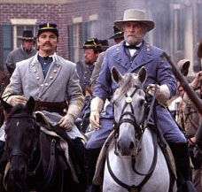

|
Writing in The New Republic several years ago about the
movie Glory, James McPherson cited a 1995 New York Times
article by Richard Bernstein entitled "Can Movies Teach
History?" Bernstein noted that "more people are getting
their history, or what they think is history, from the
movies these days than from the standard history books."
Then he asked: Does "the filmmaker, like the novelist, have
license to use the material of history selectively and
partially in the goal of entertaining, creating a good
dramatic product, even forging what is the sometime called
the poetic truth, a truth truer than the literal truth?" In
other words, "does it matter if the details are wrong if the
underlying meaning of events is accurate?"
The magnificent new movie Gods and Generals raises a
related issue. Can the filmmaker adhere to the historical
details and still miss the greater truth? Gods and Generals
has the details down pat. Indeed, although the movie is

Ronald Maxwell
|
based on the historical novel of the same name by Jeff
Shaara, it seems clear that Ron Maxwell, the producer and
director has consulted the appropriate scholarly works. For
instance, every scene involving Thomas Jonathan "Stonewall"
Jackson in Gods and Generals can be found in James I.
Robertson's definitive biography, Stonewall Jackson: The
Man, The Soldier, The Legend. The attention to detail--the
realistic battle scenes; the fidelity to the language of the
time; the role of religious faith; the complicated nature of
race relations in the south--is extraordinary. But does
this attention to the details obscure a deeper truth?
To get to the answer, it is useful to compare Gods and
Generals to another Civil War movie from a few years ago,
Glory. The latter, which recounts the exploits of one of the
first black regiments (54th Massachusetts) in the Civil War,
contains numerous historical inaccuracies. Some of them are
minor. For instance, the regiment's climactic assault
against Battery Wagner, the Confederate stronghold guarding
Charleston harbor, actually took place from south to north,
rather than north to south as depicted in the movie.
But many of the inaccuracies are major. Robert Gould
Shaw, played in the movie by Matthew Broderick, was not
Governor John Andrew's first choice to command the regiment.
When the command was offered him, he hesitated before
deciding to accept. More seriously from the standpoint of
historical accuracy, the 54th, portrayed in the movie as
made up largely of runaway slaves like John Rawlins (Morgan
Freeman) or Private Trip (Denzel Washington in a role for
which he won an Academy Award for best supporting actor) was
in fact, a regiment of freedmen, like Thomas Searles (Andre
Braugher), recruited not only from Massachusetts but New
York and Pennsylvania as well. Two of Frederick Douglass's
sons were among the first to volunteer for the 54th and
Lewis Douglass, the elder son, served from the outset as the
regiment's sergeant-major.
But historical inaccuracies aside, Glory contains a
deeper truth. This deeper truth is illustrated by the
contrast between the movie's view of slavery and that of a
story recounted by the Greek historian Herodotus. At the
beginning of Book Four of The History, Herodotus tells of
the return of the nomadic Scythians from their long war
against the Medes, during which time the Scythian women had
taken up with their slaves. The Scythians warriors now find
a race of slaves arrayed against them.
Having been repulsed repeatedly by the slaves, one of the
Scythians admonishes his fellows to set aside their weapons
and take up horsewhips. "As long as they are used to seeing
us with arms, they think that they are our equals and that
their fathers are likewise our equals. Let them see us with
whips instead of arms, and they will learn that they are our
slaves; and, once they have realized that, they will not
stand their ground against us."
The tactic works. The slaves are bewildered by the
whip-wielding Scythians, lose their fighting spirit, and
flee in terror. The implication of Herodotus's story is
clear. There are natural masters and natural slaves. A slave
has the soul of a slave and lacks the manliness to fight for
his freedom, especially if a master never deigns to treat
him as a man.
At the time of the Civil War, most southerners believed
that blacks were naturally servile. But there was doubt
about their manly spirit in the north as well. In the movie,
a reporter from Harper's Weekly says to Matthew Broderick's
Col. Shaw, "will they fight? A million readers want to
know." Shaw replies, "a million and one," illustrating the
fact that in 1863, even elite New England abolitionists had
their doubts about the manliness of blacks.
By inaccurately depicting the 54th as a regiment of
former slaves, Glory reveals the deeper truth that blacks in
general were not the natural slaves that southerners
believed them to be and that abolitionists feared that they
might be. "Who asks now in doubt and derision, 'Will the
Negro fight?'" observed one abolitionist after the assault
of the 54th against Battery Wagner. "The answer is spoken
from the cannon's mouth...it comes to us from...those graves
beneath Fort Wagner's walls, which the American people will
never forget."
The deeper truth of Glory was articulated in a different
way by Abraham Lincoln. "The expression of [the principle
that all men are created equal], in our Declaration of
Independence, was most happy and fortunate. Without this, as
well as with it, we could have declared our independence of
Great Britain; but without it, we could not, I think, have
secured our free government, and consequent prosperity. No
oppressed people will fight, and endure, as our fathers did,
without the promise of something better, than a mere change
of masters."
The deeper truth of Gods and Generals seems to be that
the war was the south's "second war of independence," as
Robert Duvall's Robert E. Lee describes the forthcoming
|

Robert Duvall as Robert E. Lee.
|
conflict as he accepts command of Virginia's forces in 1861.
Both Lee and Stephen Lang's "Stonewall" Jackson give voice
to certain clear views: that the cause of the war was not
slavery but the oppressive power of the central government,
which wished to tyrannize over the southern states; that the
south only wished to exercise its constitutional right to
secede, but was thwarted by a power-hungry Lincoln; that
southern patriots were the true heirs of the American
Revolutionary generation, who embodied the true "Spirit of
'76" in their attempt to vindicate their rights against
northern aggression; and that the Confederate cause was
noble. While Jeff Daniels's Joshua Chamberlain is permitted
to express the contrary idea that dismantling the Union in
order to protect the institution of slavery is wrong, his
voice is largely drowned out.
Glory conveys what David W. Blight in his 2001 book Race
and Reunion: The Civil War in American Memory, called the
"emancipationist" view of the Civil War. Arising out of the
Emancipation Proclamation and Lincoln's Second Inaugural,
the emancipationist view remembered the war as a struggle
for freedom, a rebirth of the republic that led to the
liberation of blacks and their elevation to citizenship and
constitutional equality.
Gods and Generals on the other hand reflects both what
Blight called the "Blue-Gray reconciliationist" view and the
"Lost Cause" interpretation of the war. The first developed
out of the necessity for both sides to deal with the immense
human cost of the war. It focused almost exclusively on the
sacrifices of the soldiers, avoiding questions of
culpability or the right and wrong of the causes. In this
view, the war was the nation's test of manhood. There was
nobility on both sides. The essence of this view was
captured by Lew Wallace, a Union general who wrote Ben Hur:
"Remembrance! Of what? Not the cause, but the heroism it
evoked."
The second got its name from a book written in 1867 by
Edward A. Pollard, who wrote that all the south has left "is
the war of ideas." The Lost Cause interpretation was neatly
summarized in an 1893 speech by a former Confederate
officer, Col. Richard Henry Lee. "As a Confederate soldier
and as a Virginian, I deny the charge [that the Confederates
were rebels] and denounce it as a calumny. We were not
rebels, we did not fight to perpetuate human slavery, but
for our rights and privileges under a government established
over us by our fathers and in defense of our homes."
The Lost Cause thesis comprises two parts. The first was
(and remains) that the war was not about slavery, but
"states rights." The second was (and remains) that the
noblest soldier of the war was Robert E. Lee, ably aided by
his "right arm," Stonewall Jackson, until the latter's death
at Chancellorsville in May 1863. For three years, Lee and
his army provided the backbone of the Confederate cause. But
though his adversaries were far less skillful than he, they
were able to bring to bear superior resources, which
ultimately overwhelmed the Confederacy. In defeat, Lee and
his soldiers could look back on a record of selfless regard
for duty and magnificent accomplishment.
Almost from the instant the conflict ended, the Lost
Cause school towered like a colossus over Civil War
historiography. Lost Cause authors such as the former
Confederate general Jubal Early were instrumental in shaping
perceptions of the war, in the north as well as in the
south. Gaining wide currency in the 19th century, the Lost
Cause interpretation remains remarkably persistent even
today - as Gods and Generals illustrates.
The problem for Gods and Generals as history is that the
first part of the Lost Cause argument is demonstrably false.
Slavery, not states right, was both the proximate and deep
cause of the war. There was no constitutional right to
dissolve the Union. Southerners could have invoked the
natural right of revolution, but they didn't because of the
implications for a slave-holding society, so they were
hardly the heirs of the Revolutionary generation.
It was an article of faith among advocates of the Lost
Cause school that southern secession was a legitimate
constitutional act and that the North had no right to
prevent the southern states from leaving the Union. But as
Charles B. Dew has shown in his remarkable book, Apostles of
Disunion: Southern Secession Commissioners and the Causes of
the Civil War, the seceding states justified their action
primarily upon a starkly white supremacist ideology, arguing
that Lincoln's election would lead to racial equality, race
war, and most importantly, "racial amalgamation."
Perhaps the clearest case of Lost Cause revisionism is
Alexander H. Stephens, vice president of the Confederacy.
After the war, he produced a two-volume work entitled A
Constitutional View of the Late War Between the States in
which he argued that southern secession was constitutional.
But on March 21, 1861, after seven states had formed the
southern Confederacy but before the bombardment of Fort
Sumpter, Stephens delivered a speech in Savannah in which he
made the argument that African slavery lay at the very
foundation of southern society. "Our new government," he
said, "is founded upon exactly the opposite ideas [from the
claim that 'all men are created equal']; its foundations are
laid, its cornerstone rests, upon the great truth that the
Negro is not equal to the white man; that slavery,
subordination to the superior race, is his natural and moral
condition."
In fact, what the southern protagonists in Gods and
Generals claim to be a second war of independence was the
interruption of the constitutional operation of republican
government that substituted the rule of the minority for
that of the majority. As Lincoln said in his July 4, 1861
address to Congress in special session, ballots were "the
rightful and peaceful successors to bullets" and that "when
ballots have fairly and constitutionally decided, there can
be no successful appeal back to bullets."
Thus the alleged right to break up the government when
the minority did not get its way was really nothing but
political blackmail. The attempted dissolution of the Union
in 1860 and 1861 was the final act in a drama that had been
under way since the 1830s, only this time the blackmailers'
bluff was called.
In 1833, the minority threatened secession over the
tariff. The majority gave in. In 1835, it threatened
secession if Congress did not prohibit discussions of
slavery during its own proceedings. The majority gave in and
passed a "Gag Rule." In 1850, the minority threatened
secession unless Congress forced the return of fugitive
slaves without a prior jury trial. The majority agreed to
pass a Fugitive Slave Act. In 1854 the minority threatened
secession unless the Missouri Compromise was repealed,
opening Kansas to slavery. Again, the majority acquiesced
rather than see the Union smashed.
But the majority could only go so far in permitting
minority blackmail to override the constitutional will of
the majority. At the Democratic Convention in Charleston,
held in April 1860, the majority finally refused the
blackmailers' demand - for a federal guarantee of slave
property in all US territories. The delegates from the deep
south walked out, splitting the Democratic party and
ensuring that Lincoln would be elected by a plurality.
The 1860 Democratic Convention gives the lie to an
important part of the Lost Cause school. First, the real
"secession" was that of the south from the Democratic party.
The resulting split in the Democratic party was instrumental
in bringing about the election of Lincoln, which the south
then used as the excuse for smashing the Union. Second and
most important, the south's demand at Charleston, far from
having anything to do with states' rights, was instead a
call for an unprecedented expansion of federal power.
While the first part of the Lost Cause interpretation of
the war - that having to do with slavery and secession - is
false, the second part is true. Robert E. Lee and Stonewall
Jackson were remarkable soldiers. The Confederate Army of
Northern Virginia did accomplish prodigious feats on the
battlefield. The Confederacy was badly overmatched in terms
of manpower and industrial capacity. This meant that
eventually, the Confederacy would succumb to a war of
attrition.
The real problem of treating Gods and Generals as history
arises from its failure to separate the true and false parts
of the Lost Cause interpretation, which will permit critics
to dismiss is as one more instance of a dissembling effort
by slaveholders who lost on the battlefield. This failure is
most acute in the movie's treatment of Jackson's
relationship to his black cook, "Big Jim" Lewis.
In the movie, Jackson treats Lewis almost as an equal,
something that may strike some viewers as fanciful. But
their relationship merely illustrates the complexity of race
relations in the antebellum south. In his biography of
Jackson, James Robertson points out that Lewis's status was
uncertain. He may have been a freedman or he may have been a
slave that Jackson hired from Lewis's master.
It should be noted that Jackson, a man of God, accepted
slavery as the will of God, but he did everything in his
power to ameliorate the condition of his own slaves. While
God may have ordained the institution of human slavery,
Jackson believed, the souls of slaves were nonetheless
worthy of salvation. In his hometown of Lexington before the
war, Jackson established a very successful Sunday School for
blacks, both slave and free. So Jackson's treatment of Lewis
is what one would expect from a man who believed that the
souls of black folk were equal in the eyes of God to his
own.
But Gods and Generals goes too far when it has Jackson
telling Lewis in December of 1862 that some, including
General Lee, advocate making soldiers of the slaves as a
condition of freedom. There is no evidence to support this
assertion. The Confederate Congress did authorize such a
step when the Confederacy was on the verge of collapse in
March of 1865, and Lee did support it then. But before those
last days, the only Confederate general officer to propose
such a step was Pat Cleburne, sometimes called the
"Stonewall of the West," a division commander in the Army of
Tennessee, and by far the finest officer in that unfortunate
organization. Cleburne's 1864 proposal caused scandal, both
among his fellow general officers in the Army of Tennessee
and politicians in Richmond when they got wind of it. As
Howell Cobb of Georgia remarked, "The day you make soldiers
of [Negroes] is the beginning of the end of the revolution.
If slaves will make good soldiers our whole theory of
slavery is wrong," Cleburne's proposal also effectively
killed his prospects for further promotion.
When all is said and done, Gods and Generals reflects
what Blight calls the "collective victory narrative."
According to this vision, the Civil War was a noble test of
national vigor between two adversaries who believed firmly
in their respective causes. The war was followed by an
interlude of bitterness and wrongheaded policy during
Reconstruction. The war was an heroic crisis that the United
States survived and a source of pride that Americans could
solve their own problems and redeem themselves in unity. In
this view, the Civil War was the original "good war," a
necessary sacrifice, a noble mutual experience that in the
long run solidified the nation.
Of course, this is the view that prevails for the most
part among Americans today. It is visible in such popular
Civil War magazines as Civil War Times Illustrated and Blue
and Gray. It is visible in Civil War art by such artist as
Morton Kunstler and Don Troiani. Such popular history and
art reflects a longing for some transplanted, heroic place
in the 19th century in which the troubling issues of race
and slavery are banished from the discussion.
But such a vision is myth, the purpose of which,
according to Roland Barthes, is to "organize a world which
is without contradiction, because it is without depth, a
world...[of] blissful clarity: things appear to mean
something by themselves." But myth should never be confused
with history. The Civil War was a moral drama. As Fredrick
Douglass remarked, "there was a right and a wrong side in
the late war that no sentiment ought to cause us to forget."
Nor should we forget it as we watch Gods and Generals.
Source: Mackubin Thomas Owens in The National Review Online (February 25, 2003).
|